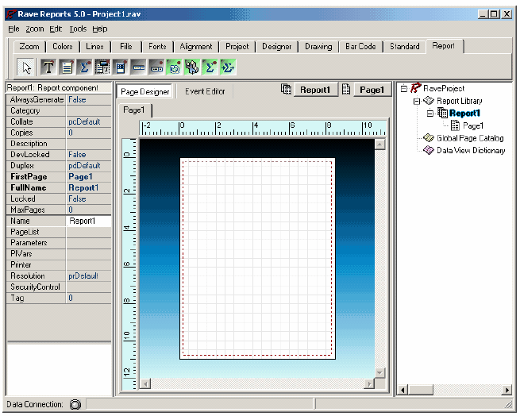
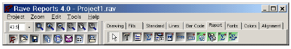
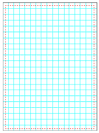
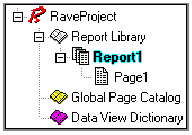
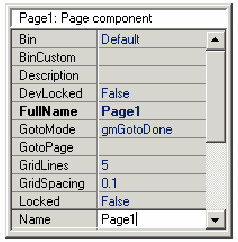
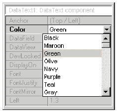

Что такое Rave?
Отчеты являются одним из наиболее сложных вещей, еще более сложной задачей, для некоторых являются базы данных. Отчеты предназначены для быстрого получения визуальной информации из данных. Для решения данной проблемы, на наиболее информационный манер, традиционные генераторы отчетов предлагают, секционное, в стиле таблиц представление данных. На сегодняшний день имеются более сложные требования к отчетам, которые не так легко решить стандартными секционно-табличными средствами.
Добро пожаловать в следующий уровень визуального проектирования отчетов! Визуальный Rave дизайнер предлагает многие уникальные свойства, которые помогут сделать процесс получения отчетов проще, быстрее и более понятным. Rave является интуитивной, визуальной средой разработки, которая может легко управлять широким спектром отчетов, много больше, чем чистый, рассчитанный на секции дизайнер. Rave также включает зеркальное отражение и другие технологии, для повторного использования содержимого ваших отчетов для быстрого внесения изменений и боле простого обслуживания. В действительности, Rave был специально разработан для получения гибкости и функциональности, в простом для освоения формате.
С чего начать? Поскольку, Rave является странично - ориентированным дизайнером, многие из его свойств должны быть понятны и легки для использования после небольшой практики. Есть большое количество параметров и других вещей, которые совсем понятны, при начальном освоении. Тем не менее, запомните, что многие из этих параметров могут быть просто проигнорированы в начале, но потом, они вам потребуются, после того как Вы приобретете более обширные знания. В действительности, помощники «Wizards» сгенерируют вам "стандартные" отчеты без знания, что происходит за сценой. Тем не менее, мы рекомендуем, что бы Вы потратили немного времени и быстро прочитали данное руководство.
В инсталляцию Rave включен проект, названный "RaveDemo", который содержит примеры различных отчетов. Что бы увидеть общий идеи, запустите RaveDemo.exe и откройте проект RaveDemo, для доступа к различным типам отчетов. Изучение проекта RaveDemo и других примеров является прекрасным методом изучения Rave.
Среда RAVE - Report Authoring Visual Environment
Отчет может быть описан, как представление данных в визуальном виде, которое можно распечатать на бумаге или просматривать в электронном виде. Обычно, имеется набор таблиц, которые предоставляют данные для создания отчета. Например, представим себе: таблицу заказчиков «Customer», таблицу продукции «Products», и таблицу продаж «Items Sold». Данные таблицы должны быть скомбинированы для получения формы письма, счета и списка заказчиков.
Начнем с быстрого обзора Rave. Первый шаг используем Rave для запуска программы. Первая вещь, которую мы увидим, будет представление на экране страницы с закладками, с двумя окнами по обе стороны страницы и панели вверху экрана. На первый взгляд, слишком много элементов дизайнера Rave, для первого раза, что бы начать работать.
Начнем с того, что показывается при старте Rave. Для начала, поймите, что есть две группы панелей, отображаемых в дизайнере Rave; это компоненты и инструменты.
Компоненты, это такие элементы, которые "бросаются" или видны на странице редактора. Это могут быть секции, штрих коды, линии, графические примитивы, и другие. Пока не будем беспокоиться об этих вещах. Если объект виден на странице, то это компонент.
Панели, которые могут изменять компоненты, являются панелями инструментов. Есть несколько таких панелей: выравнивания, палитра цветов, редактор шрифтов и другие. Если на странице есть прямоугольник, который нужно закрасить цветом фона, сначала выберите данный прямоугольник, щелкнув на нем. Затем, используя панель цветов, смените цвет на требуемый. Панели можно скрывать и показывать, выбирая их из меню Tools. Для представления обзора в более простом виде, панели могут скрываться, до тех пор, пока они не понадобятся.
Заметим, что это был очень быстрый обзор. Имеется множество настроек и свойств, которые управляют поведением каждой части визуального дизайнера. Данное руководство состоит из двух частей, Описание системы Rave, включая компонент и инструмента, затем глава справочника, которая содержит подробное описание каждого свойства. Сначала, пройдите главы Описания, и только за тем переходите к главе справочника, для большего понимания различных свойств.
Первый взгляд
Когда Rave первый раз запускается, то открывается окно, похожее на ниже представленную картинку. Поскольку Rave помнит, какой файл был открыт последний раз, ваше окно может немного отличаться. Но, области, показанные на данном рисунке, являются фундаментальными. Мы сначала расскажем о каждой части окна, что бы дать общее представление о дизайнере Rave.

Область навигации

На самом верху визуального дизайнера Rave расположена область навигации. Сюда могут индивидуально прилепляться (docking) панели, и также могут присоединяться закладки. Присоединение панелей позволяет пользователю видеть все кнопки на панели и видеть больше панелей одновременно. Присоединение панелей позволяет иметь простой доступ до панелей, но только одна панель видна в тоже время.
Панели могут содержать одновременно и компоненты и инструменты. Инструмент это свойство, которое позволяет изменять объект на странице, как редактор шрифтов или палитра цветов. Компонент это объект, который размещается на странице как группа, линия, текст, регион или секция. Для поиска имени кнопки на панели, просто переместите мышь на кнопку, и появится всплывающая подсказка. Также, заметим, что при выборе кнопки она утапливается. Отжимается, когда кнопка нажимается.
Каждую панель можно спрятать. Что бы спрятать или показать панель, перейдите в меню Tool и выберите необходимую панель, из пункта Toolbars.
Страница (Основа Rave)
Стартовая точка визуального дизайнера Rave это страница. Страница это фундамент, на котором выполняются все действия по разработке. На странице показана сетка, которая выглядит примерно, как показано на рисунке. Внешний вид страницы можно изменить на свои собственные предпочтения, данный вопрос рассматривается в главе Предпочтения.

Одной из важных вещей, которую вы знаете и помните, это то, что страница имеет свойства, такие как высота и ширина. Для просмотра или изменения свойств страницы, перейдите в панель дерева проекта и разверните узел Report, нажатием на значок «+», затем выберите имя отчета (По умолчанию "Report1") и затем выберите строку, которая по умолчанию, называется "Page1". Щелкните один раз на имени страницы, оно будет подсвечено в дереве проектов. Подсветка означает, что страница выбрана, и ее свойства можно посмотреть в панели свойств.
Панель дерева проекта

Панель дерева проекта это очень важная информативная часть дизайнера Rave и это также предоставляет простой путь для навигации по структуре проекта.
В данный момент мы рассмотрим только часть дерева проекта. Более подробно это будет рассмотрено в главе Дерево проекта.
Имеет три основных узла в дереве проекта: Report Library, Global Page Catalog и Data View Dictionary. Каждый из этих узлов (и их подузлов), может быть, развернут или свернут нажатием на символ плюс/минус. Подузлы могут создаваться и добавляться, выбором соответствующего пункта (New Report, New Global Page или New Data Object) в меню Project.
Узел Report Library содержит все отчеты в данном проекте. Каждый отчет может иметь от одной до нескольких страниц. Каждая из этих страниц может иметь один или несколько компонентов на ней.
Узел Global Page Catalog содержит все шаблоны отчета. Шаблоны отчетов могут содержать от одного до нескольких компонентов. Данные шаблоны могут затем повторно использоваться через уникальную технологию зеркального отражения Rave. Она позволяет включать такие элементы как заголовки и подвалы писем, готовые печатные формы, водяные знаки или определения полных страниц, которые затем могут служить основой для других отчетов.
Узел Data View Dictionary содержит все подключения данных, определенные для отчетов. Data view получает данные из приложения, через подсоединения данных, установленные для данного приложения.
Панель свойств
Панель свойств помогает настраивать вид и поведение компонент. Когда компонент выбран на странице, Панель свойств отражает выбор показом различных свойств, ассоциированных с данным компонентом.

Изменение значений свойств делается очень просто, использованием различных ассоциированных выпадающих меню и окон редактирования. Если не выбран ни один компонент, то панель свойств появляется пустой.
Другой путь изменения свойств, это выбор значений из списка возможных значений. Например, свойство Color имеет кнопку со значком стрелка вниз. При нажатии на данную кнопку выпадает список цветов, из которого можно выбрать нужное значение. Некоторые свойства, у которых есть список выбора, могут быть выбраны двойным щелчком (вместо раскрытия списка и выбора из него значения), для доступа к одному следующему значению за раз.
